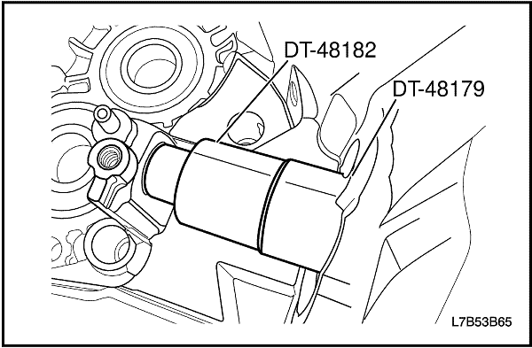

REPARACIÓN DE LA UNIDAD


Desmontaje de los componentes principales
Herramientas necesarias
Mango del botador universal DT-48179
Soporte del eje primario DT-48180
Extractor/instalador de cojinetes de bola de la ranura del alojamiento de la caja de cambios DT-48181
Extractor/instalador del manguito de aguja DT-48182
Puente de desmontaje DT-48183
Extractor/instalador de cojinetes de rodillo DT-48184
Extractor/instalador de cojinetes de bola en la ranura del alojamiento del embrague DT-48185
Extractor del eje intermedio DT-48186
Instalador/extractor del eje primario y secundario DT-48188
Extractor de pistas de cojinetes del diferencial DT-48189
Protector del cuerpo de sincronización del eje primario DT-48190
procedimiento de desmontaje (desarmado, desensamble, desensamblaje)
- Desmonte la caja de cambios del vehículo. Consulte el apartado "Conjunto de la caja de cambios" de esta sección.
- Retire el soporte del cable de mando del cambio de marchas, la arandela y los tornillos.
- Quite el tornillo y desmonte el engranaje conducido del velocímetro.
- Quite el tornillo de la horquilla de desembrague.
- Desmonte la palanca de desembrague.
- Desmonte la horquilla de desembrague y el cojinete del embrague de empuje.
- Desmonte los casquillos del eje de la palanca de desembrague.
- Quite los tornillos de guía del cojinete de empuje.
- Desmonte la guía del cojinete de empuje y la junta tórica.
- Realice un orificio en el tapón de sellado del eje intermedio con la herramienta adecuada.
Importante: Perfore la junta en el centro para evitar daños en la caja de cambios.
- Desmonte el tapón de sellado del eje intermedio y el tubo de aceite utilizando una herramienta adecuada. Deseche el tapón de sellado y el tubo de aceite.
- Sujete el eje primario con la DT-48180.
- Quite el tapón de retención del eje intermedio. Deseche el tapón de retención.
- Coloque la palanca de cambio en cualquier marcha.
- Desmonte la DT-48180.
- Quite los tornillos de la tapa trasera de la caja de cambios.
- Desmonte la tapa trasera de la caja de cambios y el tubo de aceite.
- Sujete el eje primario con la DT-48180.
- Desmonte el tapón de retención del eje primario y el tapón de retención del eje secundario. Deseche los tapones de retención.
- Coloque la palanca de cambio en cualquier marcha.
- Desmonte la DT-48180.
- Desmonte el conjunto de ejes del cambio.
- Coloque la caja de cambios en punto muerto.
- Quite el tornillo de la guía de cambio (1).
- Quite los tornillos de retención del cambio.
- Desmonte la palanca selectora (2).
- Desmonte el conjunto de ejes del cambio de marchas (3).

- Desmonte el interruptor de la luz de marcha atrás y la arandela del alojamiento de la caja de cambios.
- Quite los 12 tornillos del lateral del alojamiento del embrague.
- Quite los 7 tornillos del lateral del alojamiento de la caja de cambios.
- Desmonte el alojamiento de la caja de cambios del alojamiento del embrague.
- Monte la herramienta DT-48188 en el alojamiento de la caja de cambios.
- Apriete los 4 tornillos.
- Enrosque los vástagos en los ejes primario y secundario.
- Separe el alojamiento de la caja de cambios del alojamiento del embrague.
- Sujete los vástagos (1) con una herramienta adecuada.
- Gire las tuercas (2) en la dirección de la flecha.
- Extraiga la DT-48188 del alojamiento de la caja de cambios.
- Desenrosque los vástagos en los ejes primario y secundario.
- Quite los cuatro tornillos.
- Instale la DT-48190 y el tapón de retención en el eje primario.
Importante: Esto evitará la caída del conjunto del cuerpo de sincronización de 3ª/4ª.
- Desmonte el conjunto de ejes intermedio (1), primario (2) y secundario (3) con las respectivas horquillas de cambio fuera del alojamiento del embrague.
Importante: Sujete el conjunto de los ejes primario y secundario.
- Golpee el eje intermedio hasta sacarlo del cojinete de bola de la ranura del eje intermedio utilizando la herramienta DT-48186.
- Desmonte el conjunto del eje secundario y la horquilla de cambio.
- Desmonte el conjunto del eje intermedio y primario con sus respectivas horquillas de cambio.
- Desmonte la DT-48190 y el tapón de retención del eje primario.

- Desmonte el diferencial (1) y el cojinete del rodillo del eje secundario (2) del alojamiento del embrague.
- Extraiga el imán del alojamiento de la caja de cambios.
- Extraiga el canal de drenaje (1) del alojamiento de la caja de cambios.
- Desmonte el casquillo del raíl de cambio de ralentí (2) del alojamiento de la caja de cambios.
- Desmonte el raíl de cambio de ralentí (3) del alojamiento de la caja de cambios.

- Desmonte el pasador roscado (3), el muelle de torsión (2) y el sistema de bloqueo de marcha atrás (1) del alojamiento de la caja de cambios. Deseche el pasador roscado.

- Desmonte el manguito de aguja del alojamiento de la caja de cambios utilizando la DT-48179 y la DT-48182.
- Desmonte los cojinetes de bola de la ranura de los ejes primario y secundario del alojamiento de la caja de cambios utilizando la DT-48179 y la DT-48181.
- Extraiga la pista del cojinete del diferencial del alojamiento de la caja de cambios.
- Instale la DT-48189.
- Gire la tuerca (1) en la dirección de la flecha.
- Instale la herramienta DT-48183 en la DT-48189.
- Sujete el vástago con una herramienta adecuada.
- Gire la tuerca (2) en la dirección de la flecha.
- Extraiga el asiento del alojamiento de la caja de cambios.

- Retire la arandela de junta del eje del alojamiento de la caja de cambios. Deseche la arandela de junta del eje.
- Desmonte el cojinete del rodillo del eje primario del alojamiento del embrague utilizando la DT-48179 y la DT-48184.
- Desmonte el anillo elástico del cojinete de bola de la ranura del eje intermedio.
- Desmonte el cojinete de bola de la ranura del eje intermedio del alojamiento del embrague utilizando la DT-48179 y la DT-48185.
- Desmonte la pista del cojinete del diferencial del alojamiento del embrague.
- Instale la DT-48189.
- Gire la tuerca (1) en la dirección de la flecha.
- Instale la herramienta DT-48183 en la DT-48189.
- Sujete el vástago con una herramienta adecuada.
- Gire la tuerca (2) en la dirección de la flecha.
- Desmonte el asiento del alojamiento del embrague.
- Retire la arandela de junta del eje del alojamiento del embrague. Deseche la arandela de junta del eje.
Desmontaje del eje de cambio
procedimiento de desmontaje (desarmado, desensamble, desensamblaje)
Importante: Observe la orientación del pasador helicoidal antes de su desmontaje.
- Desmonte el pasador helicoidal (6). Deseche el pasador helicoidal.
- Desmonte el pasador helicoidal (5). Deseche el pasador helicoidal.
- Desmonte el enclavamiento del cambio de marchas (3).
- Desmonte la garra del cambio (4).
- Desmonte el asiento del muelle exterior (2).
- Desmonte el muelle de presión de 5ª/marcha atrás (1).

- Desmonte el pasador helicoidal (2). Deseche el pasador helicoidal.
- Desmonte la palanca de cambios (1).
- Quite el tapón de ventilación (3).
- Desmonte la tapa del cambio (4).

- Quite los anillos elásticos (1). Deseche los anillos elásticos.
- Desmonte el asiento del muelle interior (2).
- Desmonte el muelle de presión de 1ª/2ª (3).
- Desmonte el disco de ángulo (4) de la varilla de cambio (5).
- Limpie todos los componentes en una solución adecuada.
- Compruebe todos los componentes por si presentasen desgaste o daños.
Desmontaje del eje intermedio
Herramientas necesarias
Adaptador de la prensa del eje intermedio DT-48191
procedimiento de desmontaje (desarmado, desensamble, desensamblaje)
- Extraiga el conjunto de 1ª y el conjunto de 2ª como una unidad, desde el eje intermedio, utilizando el plato separador de engranajes y cojinetes, la DT-48191, y una prensa hidráulica.
- Coloque el conjunto de 1ª y el conjunto de 2ª, como una unidad, sobre el banco.
- Desmonte la arandela de empuje (1).
- Desmonte el cojinete del rodillo (2).
- Desmonte la 1ª (3).
- Desmonte el cojinete de rodillo (4).
- Retire el collarín del cojinete (5).
- Desmonte la arandela de empuje (6).
- Desmonte el cono interno de 1ª (1).
- Desmonte el anillo de bloqueo de 1ª (2).
- Desmonte el cono exterior de 1ª (3).
- Desmonte el conjunto del sincronizador de 1ª/2ª (4).
- Desmonte el cono exterior de 2ª (1).
- Desmonte el anillo de bloqueo de 2ª (2).
- Desmonte el cono interior de 2ª (3).
- Desmonte la 2ª.
- Desmonte los cojinetes de aguja del eje intermedio.
Desmontaje del eje primario
Herramientas necesarias
Adaptador de prensa del eje primario/secundario DT-48192
procedimiento de desmontaje (desarmado, desensamble, desensamblaje)
- Desmonte la arandela de empuje (1).
- Desmonte la 4ª (2).
- Desmonte el cojinete de agujas (3).
- Desmonte el anillo de bloqueo de 4ª (4).
- Desmonte el collarín del cojinete y el sincronizador de 3ª/4ª del eje primario utilizando el plato separador de engranajes y cojinetes debajo del engranaje de 3ª, la DT-48192, y una prensa hidráulica.
- Desmonte los siguientes componentes como un conjunto:
- El collarín del cojinete (1).
- El conjunto del sincronizador de 3ª/4ª (2).
- La arandela de empuje (3).
- El cojinete de empuje (4).
- El anillo de bloqueo de 3ª (5).
- El engranaje de 3ª (6).
- Desmonte la jaula de agujas (1).
- Desmonte el cojinete de empuje (2).
- Extraiga el engranaje de 5ª utilizando el plato separador de engranajes y cojinetes, la DT-48192, y una prensa hidráulica.
Desmontaje del eje secundario
Herramientas necesarias
Adaptador de prensa del eje primario/secundario DT-48192
procedimiento de desmontaje (desarmado, desensamble, desensamblaje)
- Extraiga el engranaje conducido de 4ª utilizando el plato separador de engranajes y cojinetes, la DT-48192, y una prensa hidráulica.
Importante: El engranaje conducido de 4ª está muy apretado.
- Extraiga el engranaje conducido de 3ª utilizando el plato separador de engranajes y cojinetes, la DT-48192, y una prensa hidráulica.
Importante: El engranaje conducido de 3ª está muy apretado.
- Desmonte el engranaje de 5ª (1) y las dos jaulas de agujas (2).

- Extraiga el collarín del cojinete utilizando el plato separador de engranajes y cojinetes, la DT-48192, y una prensa hidráulica.
Importante: No ponga en contacto la arandela de empuje debajo del engranaje de marcha atrás.
- Desmonte los siguientes componentes como un conjunto:
- El collarín del cojinete (1).
- El anillo de bloqueo de 5ª (2).
- El conjunto del sincronizador de 5ª/marcha atrás (3).
- El anillo de bloqueo de marcha atrás (4).
- La marcha atrás (5).
- La jaula de agujas (6).
- Desmonte el collarín y la arandela de empuje utilizando el plato separador de engranajes y cojinetes, la DT-48192, y una prensa hidráulica.
Importante: Asegúrese de que el plato separador de engranajes y cojinetes no está en contacto con el piñón antes de extraer el collarín y la arandela de empuje.
Limpieza y comprobación del alojamiento del embrague y de la caja de cambios
Revise el alojamiento del embrague y el alojamiento del diferencial para comprobar la presencia de las siguientes anomalías:
- Grietas
- Porosidad
- Superficie de contacto dañada
- Roscas de tornillos pasadas
- Distorsión
Sustituya cualquier pieza que presente alguno de estos problemas.
Limpieza e inspección de engranajes
Compruebe los dientes de los engranajes y sus estrías por si tuvieran un desgaste o daños excesivos.
Elimine cualquier muesca o rayadura poco importantes con una piedra de aceite. Sustituya los engranajes desgastados o dañados.
Limpieza y comprobación de la arandela de empuje y del cojinete
- Compruebe si la arandela de empuje presenta desgaste o daños. Sustituya las arandelas de empuje desgastadas o dañadas.
- Compruebe el estado de todos los cojinetes de empuje, el cojinete del eje primario y el del eje secundario. Lave los cojinetes con un disolvente de limpieza. Aplique aire comprimido a los cojinetes. Lubrique los cojinetes con aceite ligero. Compruebe si los cojinetes presentan dureza girando lentamente la pista a mano.
Importante: No permita que los cojinetes den vueltas. Gire lentamente los cojinetes con la mano. El giro de los cojinetes puede causar daños en los rodillos.
Limpieza y comprobación de los sincronizadores
- Limpie el sincronizador con disolvente limpio.
- Seque los componentes al aire.
- Revise los dientes del sincronizador y compruebe las siguientes anomalías:
- Desgaste
- Rasguños
- Marcas
- Rebabas
- Roturas
- Compruebe las llaves y los muelles por si presentasen las siguientes anomalías:
- Desgaste
- Grietas
- Distorsión
-
- Si se da alguno de estos problemas, sustituya el sincronizador.
Limpieza y comprobación de la horquilla de selección
Compruebe las horquillas de selección, los ejes y el tope de goma por si hubiera desgaste o daños. Sustituya cualquier pieza en el caso de estar desgastada o dañada.
| © Copyright Chevrolet Europe. Reservados todos los derechos |